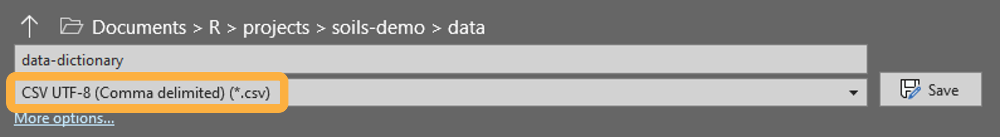

You can immediately install {soils}, create a new template project, and render example reports, as demonstrated in the last two tutorials. However, you will need to customize and edit the content to fit your project, shown in the next three tutorials: Customize & write, Render reports, and Troubleshoot.
Access the example datasets
An example dataset and data dictionary are included in every {soils}
project. Access the .csv files in the data
folder, or load the package and call the dataframes by name as shown
below.
Load {soils} and see first five rows of each dataframe
| year | sample_id | farm_name | producer_id | field_name | field_id | county | crop | longitude | latitude | texture | bd_g_cm3 | pmn_lb_ac | nh4_n_mg_kg | no3_n_mg_kg | poxc_mg_kg | ph | ec_mmhos_cm | k_mg_kg | ca_mg_kg | mg_mg_kg | na_mg_kg | cec_meq_100g | b_mg_kg | cu_mg_kg | fe_mg_kg | mn_mg_kg | s_mg_kg | zn_mg_kg | total_c_percent | total_n_percent | ace_g_protein_kg_soil | sand_percent | silt_percent | clay_percent | min_c_96hr_mg_c_kg_day | p_olsen_mg_kg | wsa_percent | om_percent | toc_percent | whc_in_ft | inorganic_c_percent |
|---|---|---|---|---|---|---|---|---|---|---|---|---|---|---|---|---|---|---|---|---|---|---|---|---|---|---|---|---|---|---|---|---|---|---|---|---|---|---|---|---|---|
| 2023 | 23-WUY05-01 | Farm 150 | WUY05 | Field 01 | 1 | County 9 | Hay/Silage | -119 | 49 | Clay Loam | 1.30 | 67.13 | 1.6 | 9.2 | 496 | 6.7 | 0.42 | 498 | 1380 | 145.2 | 16.1 | 7.8 | 0.22 | 0.6 | 26 | 1.5 | 4.29 | 1.7 | 1.85 | 0.16 | 6.74 | 44 | 23 | 33 | 35.6 | 15 | 88.5 | 4.5 | 1.85 | 1.01 | NA |
| 2022 | 22-RHM05-02 | Farm 085 | RHM05 | Field 02 | 2 | County 18 | Green Manure | -123 | 47 | Sandy Loam | 0.88 | 129.97 | 21.6 | 6.1 | 571 | 5.9 | 0.05 | 198 | 780 | 96.8 | 20.7 | 10.5 | 0.09 | 0.4 | 28 | 2.7 | 9.41 | 0.8 | 2.88 | 0.18 | 21.50 | 69 | 21 | 10 | 30.0 | 37 | 92.6 | 5.8 | 2.88 | 1.08 | NA |
| 2022 | 22-ENR07-02 | Farm 058 | ENR07 | Field 02 | 2 | County 11 | Vegetable | -122 | 47 | Silt Loam | 1.21 | 122.17 | 8.1 | 25.3 | 419 | 6.3 | 0.60 | 294 | 1760 | 266.2 | 20.7 | 13.0 | 0.41 | 4.2 | 141 | 4.1 | 26.73 | 4.2 | 1.68 | 0.14 | 10.90 | 11 | 79 | 10 | 15.0 | 73 | 91.3 | 2.4 | 1.68 | 2.77 | NA |
| 2022 | 22-ZTD04-03 | Farm 061 | ZTD04 | Field 03 | 3 | County 13 | Herb | -120 | 46 | Silt Loam | 1.37 | 95.24 | 13.8 | 16.9 | 424 | 6.8 | 2.18 | 229 | 3380 | 738.1 | 80.5 | 14.4 | 0.72 | 1.1 | 37 | 11.5 | 51.70 | 2.4 | 1.40 | 0.12 | 5.53 | 36 | 51 | 13 | 67.5 | 30 | 94.3 | 2.9 | 1.40 | 1.93 | NA |
| 2023 | 23-WUY05-03 | Farm 150 | WUY05 | Field 03 | 3 | County 9 | Pasture, Seeded | -119 | 49 | Sandy Loam | 1.22 | 111.35 | 3.9 | 6.7 | 547 | 7.6 | 0.60 | 273 | 2820 | 193.6 | 13.8 | 10.1 | 0.25 | 0.7 | 15 | 1.7 | 3.29 | 0.8 | 1.65 | 0.16 | 4.20 | 64 | 33 | 3 | 50.6 | 8 | 84.6 | 6.7 | 1.53 | 1.28 | 0.12 |
| measurement_group | measurement_group_label | column_name | order | abbr | unit | abbr_unit |
|---|---|---|---|---|---|---|
| biological | Biological | om_percent | 1 | Organic Matter | % | Organic Matter (%) |
| biological | Biological | min_c_96hr_mg_c_kg_day | 2 | Min C | mg/kg/day | Min C (mg/kg/day) |
| biological | Biological | poxc_mg_kg | 3 | POXC | ppm | POXC (ppm) |
| biological | Biological | pmn_lb_ac | 4 | PMN | lb/ac | PMN (lb/ac) |
| biological | Biological | ace_g_protein_kg_soil | 5 | ACE Protein | g/kg | ACE Protein (g/kg) |
Use washi_data and data_dictionary as
templates when formatting your own data to use in {soils} functions and
reports.
Data template
Your data must contain the below required columns and each soil
measurement must be in its own column, as shown in
washi_data.
Glimpse at the example data
dplyr::glimpse(washi_data)
#> Rows: 100
#> Columns: 42
#> $ year <int> 2023, 2022, 2022, 2022, 2023, 2022, 2023, 2022,…
#> $ sample_id <chr> "23-WUY05-01", "22-RHM05-02", "22-ENR07-02", "2…
#> $ farm_name <chr> "Farm 150", "Farm 085", "Farm 058", "Farm 061",…
#> $ producer_id <chr> "WUY05", "RHM05", "ENR07", "ZTD04", "WUY05", "B…
#> $ field_name <chr> "Field 01", "Field 02", "Field 02", "Field 03",…
#> $ field_id <int> 1, 2, 2, 3, 3, 2, 1, 2, 1, 1, 1, 1, 2, 8, 2, 1,…
#> $ county <chr> "County 9", "County 18", "County 11", "County 1…
#> $ crop <chr> "Hay/Silage", "Green Manure", "Vegetable", "Her…
#> $ longitude <int> -119, -123, -122, -120, -119, -117, -118, -117,…
#> $ latitude <int> 49, 47, 47, 46, 49, 47, 49, 47, 48, 48, 46, 47,…
#> $ texture <chr> "Clay Loam", "Sandy Loam", "Silt Loam", "Silt L…
#> $ bd_g_cm3 <dbl> 1.30, 0.88, 1.21, 1.37, 1.22, 1.14, 1.44, 1.24,…
#> $ pmn_lb_ac <dbl> 67.13, 129.97, 122.17, 95.24, 111.35, 61.92, -7…
#> $ nh4_n_mg_kg <dbl> 1.6, 21.6, 8.1, 13.8, 3.9, 12.4, 2.4, 12.4, 2.3…
#> $ no3_n_mg_kg <dbl> 9.2, 6.1, 25.3, 16.9, 6.7, 4.3, 21.5, 7.4, 2.3,…
#> $ poxc_mg_kg <int> 496, 571, 419, 424, 547, 235, 501, 480, 965, 10…
#> $ ph <dbl> 6.7, 5.9, 6.3, 6.8, 7.6, 5.5, 5.5, 5.9, 6.3, 6.…
#> $ ec_mmhos_cm <dbl> 0.42, 0.05, 0.60, 2.18, 0.60, 0.81, 0.55, 0.34,…
#> $ k_mg_kg <int> 498, 198, 294, 229, 273, 372, 289, 355, 253, 73…
#> $ ca_mg_kg <int> 1380, 780, 1760, 3380, 2820, 1480, 1140, 2080, …
#> $ mg_mg_kg <dbl> 145.2, 96.8, 266.2, 738.1, 193.6, 229.9, 133.1,…
#> $ na_mg_kg <dbl> 16.1, 20.7, 20.7, 80.5, 13.8, 16.1, 23.0, 16.1,…
#> $ cec_meq_100g <dbl> 7.8, 10.5, 13.0, 14.4, 10.1, 12.4, 12.9, 14.8, …
#> $ b_mg_kg <dbl> 0.22, 0.09, 0.41, 0.72, 0.25, 0.18, 0.12, 0.21,…
#> $ cu_mg_kg <dbl> 0.6, 0.4, 4.2, 1.1, 0.7, 1.0, 0.5, 1.4, 1.1, 0.…
#> $ fe_mg_kg <int> 26, 28, 141, 37, 15, 64, 44, 85, 129, 31, 86, 3…
#> $ mn_mg_kg <dbl> 1.5, 2.7, 4.1, 11.5, 1.7, 9.0, 4.4, 17.1, 9.9, …
#> $ s_mg_kg <dbl> 4.29, 9.41, 26.73, 51.70, 3.29, 4.51, 9.13, 8.2…
#> $ zn_mg_kg <dbl> 1.7, 0.8, 4.2, 2.4, 0.8, 0.5, 34.0, 0.9, 7.8, 0…
#> $ total_c_percent <dbl> 1.85, 2.88, 1.68, 1.40, 1.65, 1.55, 2.25, 2.37,…
#> $ total_n_percent <dbl> 0.16, 0.18, 0.14, 0.12, 0.16, 0.13, 0.15, 0.17,…
#> $ ace_g_protein_kg_soil <dbl> 6.74, 21.50, 10.90, 5.53, 4.20, 10.30, 7.73, 6.…
#> $ sand_percent <int> 44, 69, 11, 36, 64, 24, 80, 22, 62, 48, 80, 69,…
#> $ silt_percent <int> 23, 21, 79, 51, 33, 62, 16, 57, 26, 45, 14, 27,…
#> $ clay_percent <int> 33, 10, 10, 13, 3, 14, 4, 21, 12, 7, 6, 4, 10, …
#> $ min_c_96hr_mg_c_kg_day <dbl> 35.60, 30.00, 15.00, 67.50, 50.60, 25.50, 30.60…
#> $ p_olsen_mg_kg <int> 15, 37, 73, 30, 8, 33, 27, 29, 40, 16, 19, 11, …
#> $ wsa_percent <dbl> 88.5, 92.6, 91.3, 94.3, 84.6, 86.6, 86.9, 82.5,…
#> $ om_percent <dbl> 4.5, 5.8, 2.4, 2.9, 6.7, 3.2, 27.0, 4.2, 7.9, 5…
#> $ toc_percent <dbl> 1.85, 2.88, 1.68, 1.40, 1.53, 1.55, 2.25, 2.37,…
#> $ whc_in_ft <dbl> 1.01, 1.08, 2.77, 1.93, 1.28, 2.25, 0.84, 2.14,…
#> $ inorganic_c_percent <dbl> NA, NA, NA, NA, 0.12, NA, NA, NA, NA, NA, NA, N…Your data must have the below required columns.
However, only the columns in bold are required to have
values. Put another way, your data must have these column names, even if
every row is blank. Otherwise, the data-validation chunk in
01_producer-report.qmd or {soils} functions will error. For
more details, see Data/dictionary
mismatches.
year <int>is used to select samples to be included in the report.sample_id <chr>must be unique throughout the dataset.farm_name <chr>is included at the top of the report. If blank, it is replaced with “Farm:producer_id”.producer_id <chr>is used to select samples to be included in the report.field_name <chr>must be unique across all fields for each producer and is displayed in tables and tool tips for maps. If blank, it is replaced with “Fieldfield_id”.field_id <chr>must be unique across all fields for each producer.county <chr>is used to group and summarize samples from the same county as the producer. Can be blank.crop <chr>is used to group and summarize samples from the same crop as the producer. Can be blank.longitude <int>andlatitude <int>are used to map each sample point using the {leaflet} package. Coordinates must be in decimal degrees using WGS 84 (aka EPSG:4326).texture <chr>is used in the “physical” measurement group table. This column is not used in the texture triangle plot, which is instead created from percentage sand, silt, and clay measurement results.-
Each soil measurement must have its own column in the dataset and a corresponding row in the data dictionary, as shown in Dictionary template.
- Measurement columns come after the required columns
for easy selection in the
tidy-longchunk.
- Measurement columns come after the required columns
for easy selection in the
Dictionary template
The data dictionary is used to group and order soil measurements, and
to nicely format labels in tables and plots. The example
data_dictionary contains UTF-8 encoded
superscripts, subscripts, and special characters.
To properly encode your data dictionary as UTF-8, save it to the
data folder as
CSV UTF-8 (Comma delimited) (*.csv) in MS Excel.

Glimpse at the example data dictionary
dplyr::glimpse(data_dictionary)
#> Rows: 32
#> Columns: 7
#> $ measurement_group <chr> "biological", "biological", "biological", "bio…
#> $ measurement_group_label <chr> "Biological", "Biological", "Biological", "Bio…
#> $ column_name <chr> "om_percent", "min_c_96hr_mg_c_kg_day", "poxc_…
#> $ order <int> 1, 2, 3, 4, 5, 1, 2, 3, 4, 5, 6, 1, 2, 3, 4, 5…
#> $ abbr <chr> "Organic Matter", "Min C", "POXC", "PMN", "ACE…
#> $ unit <chr> "%", "mg/kg/day", "ppm", "lb/ac", "g/kg", "", …
#> $ abbr_unit <chr> "Organic Matter<br>(%)", "Min C<br>(mg/kg/day)…Your data dictionary must have the below required columns for every soil measurement included in your data.
measurement_group <chr>determines how the soil measurements are grouped. The order in which these groups appear is determined by theset-groupschunk.measurement_group_label <chr>is the section heading for each measurement group.order <int>determines the sequence of soil measurements within ameasurement_groupin tables and plots.column_name <chr>is used to join the dictionary with your data. Must exactly match the column names of the soil measurements in your dataset.abbr <chr>andunit <chr>are how soil measurements are labeled in tables with the abbreviation as the column header and unit as a secondary spanning header.abbr_unit <chr>is how the soil measurements are labeled in plots and uses an HTML tag to include a line break between the abbreviation and unit.
Data/dictionary mismatches
Getting your data and dictionary in the proper format to render the report without errors will likely be the most difficult part of making {soils} work for your project.
The data-validation
chunk and many {soils} functions include
testthat::expect_contains() to fail early if required
columns are missing from either the data or the dictionary. This early
failure saves time by stopping as soon as the missing column or
data/dictionary mismatch is identified. Additionally, these early failed
tests provide the expected versus actual
values, making it easier to correct the issue with minimal
debugging.
Below are some common issues that arise and possible workarounds. These workarounds may make more sense after reviewing the Your data section that includes example errors and fixes.
Extra columns in data
Soil measurements in your data but not in your
dictionary will cause the report to error in the
data-validation chunk. For example, rendering the report
will fail if your dataset contains both pH and
CEC results but your dictionary only contains
pH. Either add the CEC measurement to your
dictionary or remove this measurement column from your data. If you
don’t want to delete the column from your datasheet, you can remove it
from only the data object with
data <- dplyr::select(data, -cec_meq_100g) perhaps in
the load-data chunk.
Additional metadata columns in your data will also
cause the report to error in the data-validation chunk. For
example, if you have a column phone_number with producer
phone numbers that won’t be used in the report, remove it from the data
with the
data <- dplyr::select(data, -c(cec_meq_100g, phone_number)).
If you want to use this column in the report, then add it to the
required_cols vector of the data-validation chunk so
that the testthat function doesn’t error.
Your data
Once your project data and dictionary files match the structure of
the examples and are saved in the data folder, follow along
with the changes in the code chunks in
01_producer-report.qmd. Code you will need to change are
marked with the text “EDIT:”. Find all edit markers in the
RStudio project with Ctrl + Shift +
F to open the Find in Files wizard.
Below changes are for demonstration purposes only, the actual changes should be based on your data and dictionary.
load-dictionary chunk
Change data-dictionary.csv to the name of your
dictionary file (my-dictionary.csv). If using subscripts,
superscripts, or special characters, make sure your csv is saved with
UTF-8 encoding (see Dictionary
template for how to do this).
Example changed chunk
set-groups chunk
Add or remove groups to the measurement_groups vector to
match your data dictionary and set the order of how they appear in the
results section of the report. macro and micro
were removed and chemical was moved before
biological.
Example changed chunk
# EDIT: Add, remove, or rearrange order of measurement groups to match your data
# dictionary.
measurement_groups <- c(
"physical",
"chemical",
"biological"
)
tidy-long chunk
Replace the column range of the soil measurements from the example
washi-data.csv (12:42) with the column range
of the soil measurements in your data (12:26). This chunk
tidies the
data from wide to long for summarization and visualization.
Example changed chunk
# EDIT: `washi_data` example has soil measurements in columns 12 - 42. Replace
# this column range with the column indices of the soil measurements in your
# dataset.
# Tidy data into long format and join with data dictionary
results_long <- data |>
dplyr::mutate(
dplyr::across(
# EDIT: replace with the column range of your soil measurements
12:26,
as.numeric
)
) |>
tidyr::pivot_longer(
# EDIT: replace with the column range of your soil measurements
cols = 12:26,
names_to = "measurement"
)
data-validation chunk
This chunk checks there are no mismatches as described in Data/dictionary mismatches by
making sure all column names in your dataset are in either the
required_cols vector or the column_name column
of my-dictionary.csv.
In this example, add an extra column named tillage in
my-data.csv without changing the dictionary.
After clicking the Render button, the report failed.
Quitting from lines 94-115 [data-validation] (01_producer-report.qmd)
Error:
! names(data) (`actual`) isn't fully contained within c(required_cols, dictionary$column_name) (`expected`).
* Missing from `expected`: "tillage"
* Present in `expected`: "year", "sample_id", "farm_name", "producer_id", "field_name", "field_id", "county", "crop", "longitude", ...This error message says the error occurred in lines 94-115 in the
data-validation chunk because tillage was
missing from the expected values, which are elements of
required_cols and dictionary$column_name.
Adding "tillage" to required_cols prevents
this error.
Example changed chunk
# OPTIONAL EDIT: If you have extra columns in `data`, add them to this vector.
required_cols <- c(
"year",
"sample_id",
"farm_name",
"producer_id",
"field_name",
"field_id",
"county",
"crop",
"longitude",
"latitude",
"texture",
"tillage"
)
# Check all column names in `data` are in the `required_cols` vector or
# `column_name` column of `dictionary`.
testthat::expect_in(names(data), c(required_cols, dictionary$column_name))To demonstrate another data/dictionary mismatch error, remove
cec_meq_100g from the dictionary while keeping it in the
dataset.
Quitting from lines 94-115 [data-validation] (01_producer-report.qmd)
Error:
! names(data) (`actual`) isn't fully contained within c(...) (`expected`).
* Missing from `expected`: "cec_meq_100g"
* Present in `expected`: "year", "sample_id", "farm_name", "producer_id", "field_name", "field_id", "county", "crop", "texture", ...The error occurred because cec_meq_100g was missing from
the expected values. Either add cec_meq_100g
back to the dictionary or remove this column from the dataset to fix
this error.
See the troubleshooting article for more help on debugging errors.